Publicidade e propaganda · Design gráfico
Alyce Vinhal
Apresentação
Publicitária e designer gráfica, 23 anos. Trabalho na construção de identidade e conteúdo para marcas — do conceito à peça final, com atenção a consistência visual e clareza de mensagem.
Telefone(61) 98116-8737
E-mailalycemariana3@gmail.com
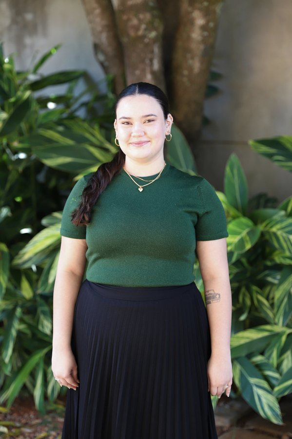
Seção 01
Botolifting Brasília — carrosséis educativos sobre skincare
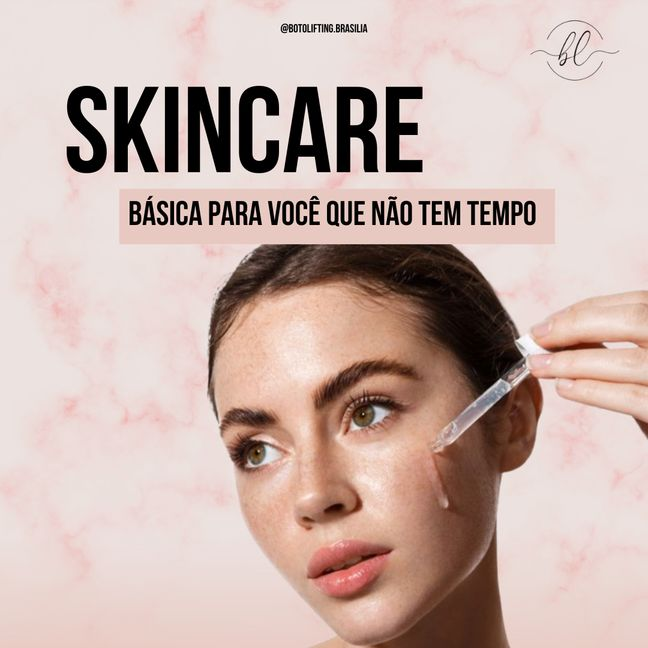
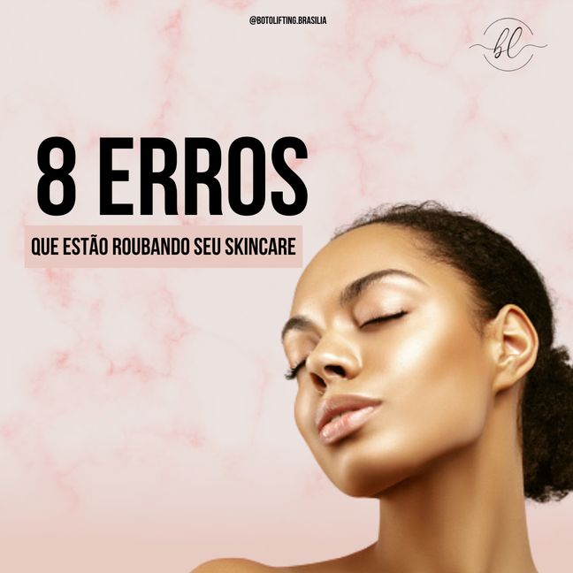
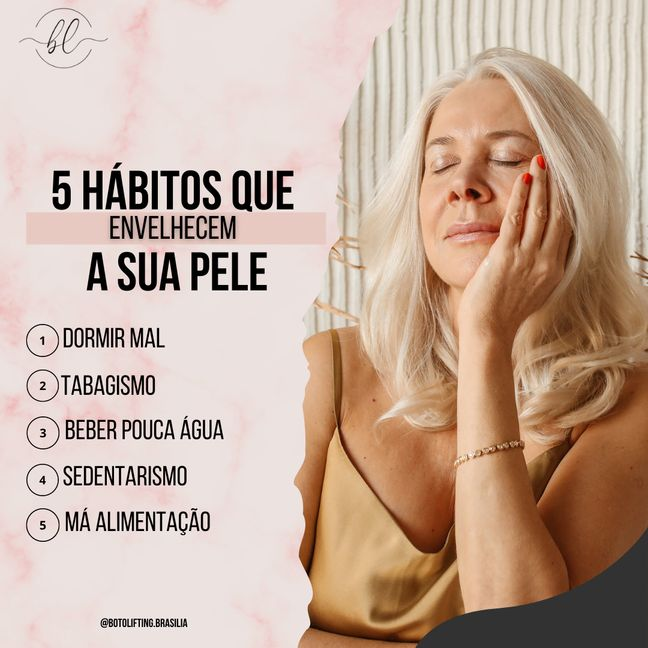
Seção 01
Assessoria contábil — conteúdo institucional e educativo
Seção 01
Consultoria de gestão — conteúdo de liderança e finanças
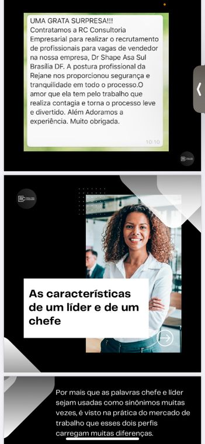
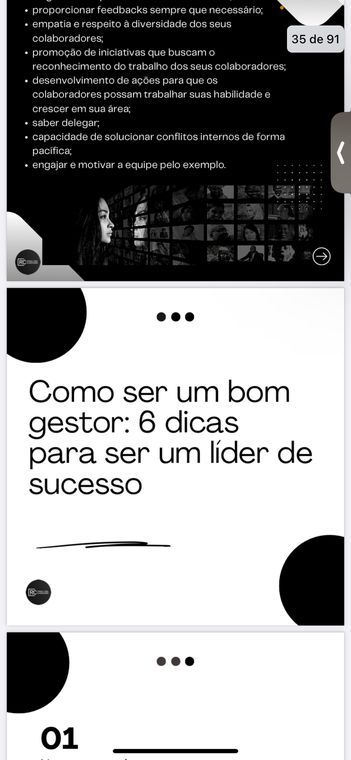
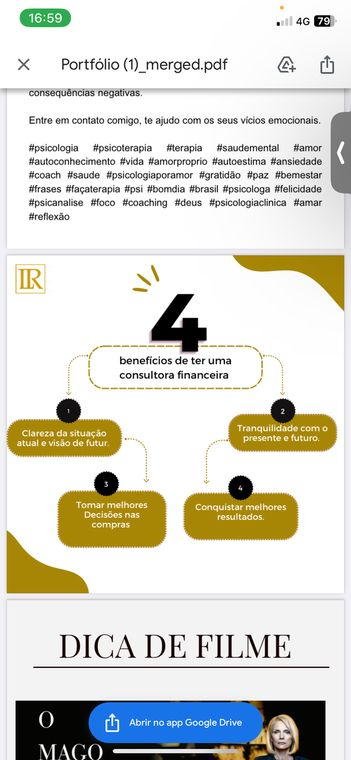
Seção 01
Botolifting Brasília — campanha guia da pele
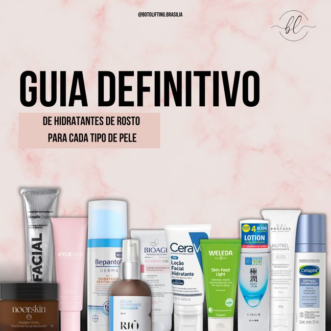
Seção 01
Câmara dos Deputados — carrossel sobre inovação na gestão pública
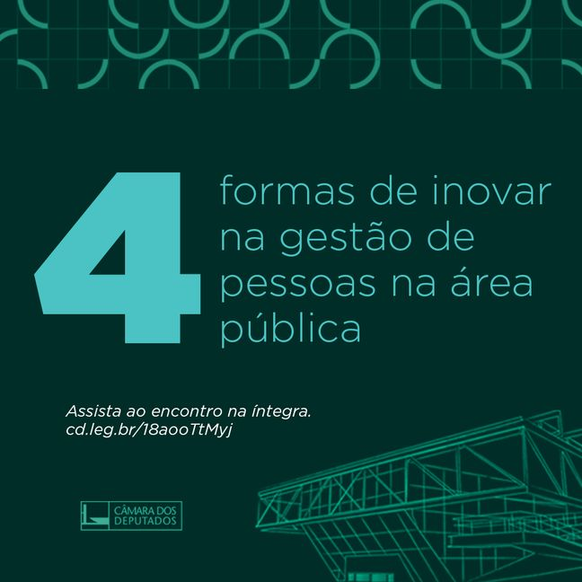
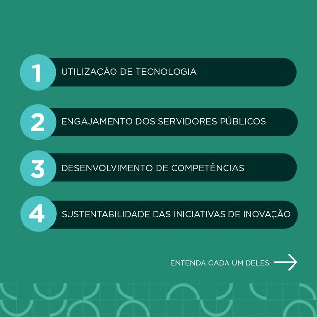
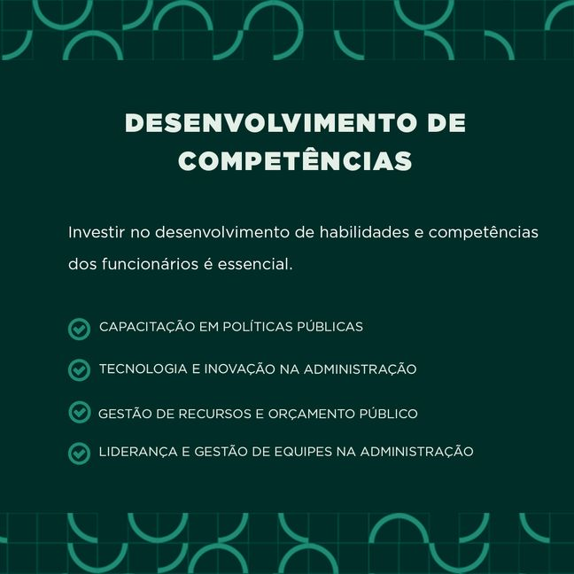
Seção 01
Câmara dos Deputados — desafios orçamentários contemporâneos
Seção 02
Botolifting Brasília — stories informativos
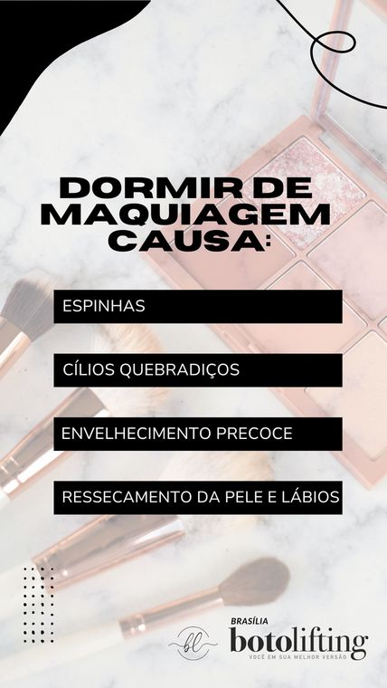
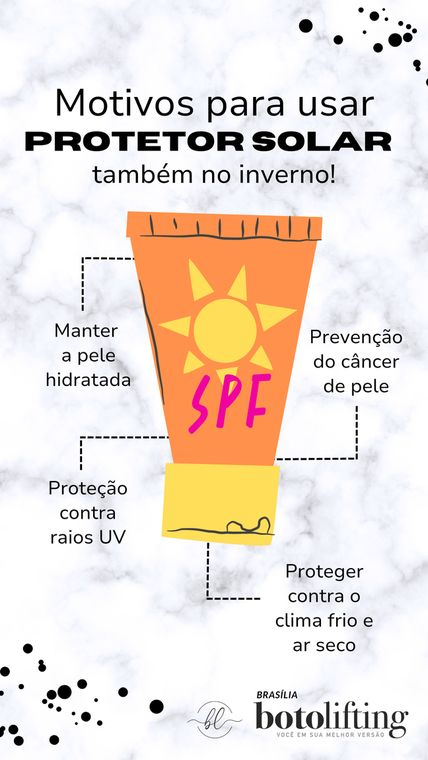
Seção 02
Clínica de estética — agendamento e engajamento
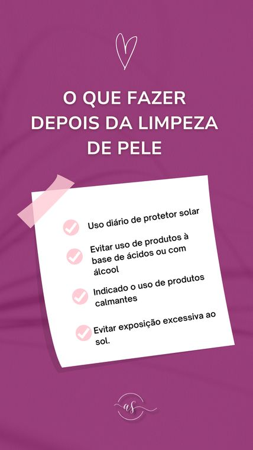
Seção 02
Botolifting Brasília — campanha paciente modelo
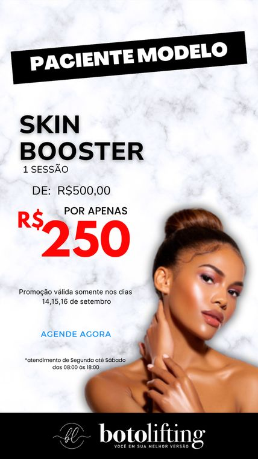
Seção 02
Câmara dos Deputados — divulgação de encontros e cursos
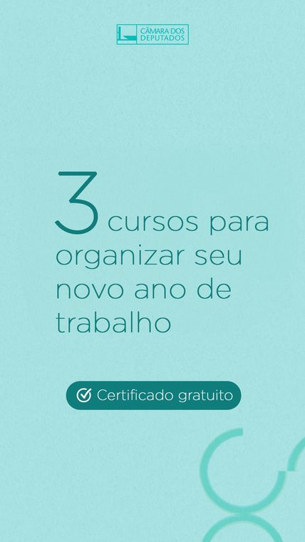
Seção 03
INSS — comunicação interna e datas institucionais
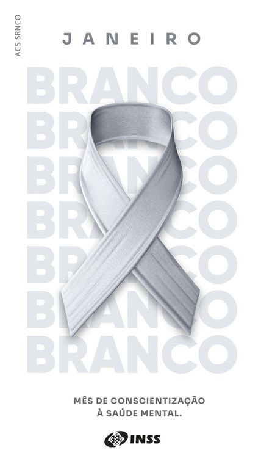
Seção 04
Registro automotivo — encontro de carros clássicos
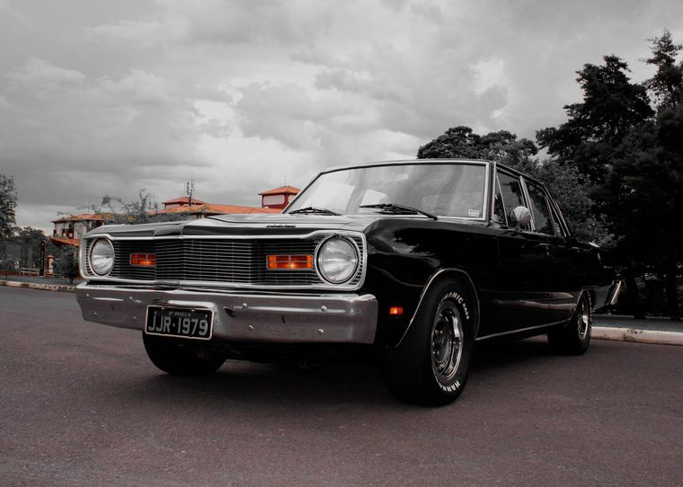
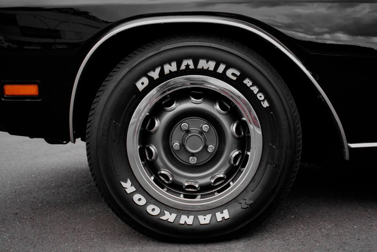
Seção 04
Registro automotivo e retrato
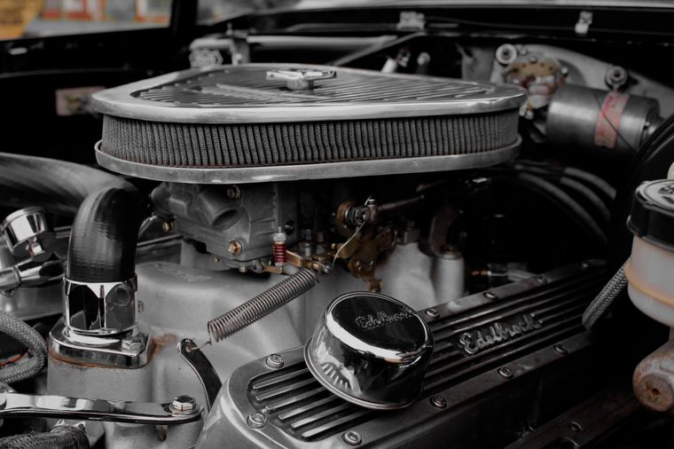
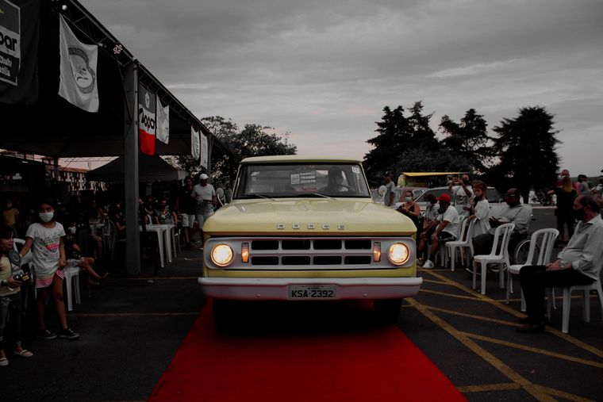
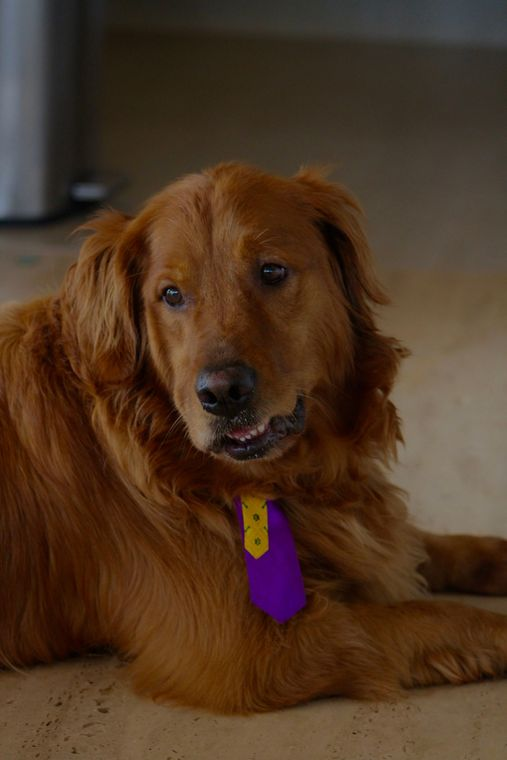
Seção 05
Reels e conteúdo em vídeo — estética
Seção 05
Reels e conteúdo em vídeo — institucional
Fim
Vamos conversar sobre o próximo projeto